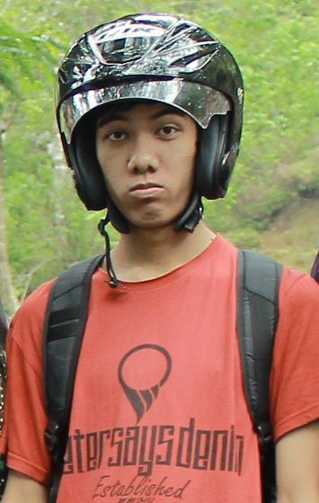

Perkenalkan nama saya Ega Gefrie Febriawan. Saya adalah salah satu mahasiswa di Universitas Negeri Malang. Saya mengambil prodi S1 Pendidikan Teknik Informatika.
Saya lahir di Kediri, pada tanggal 24 Februari 1993. Saya adalah anak pertama dari tiga bersaudara. Adik saya yang pertama bersekolah di MAN 3 Kediri dan yang kedua masih SD kelas 5 di SDN Ngadiluwih 1.
Saya bukan termasuk anak yang pintar jika dibandingkan dengan teman-teman saya. Meskipun demikian saya masih mempunyai kemauan untuk menjadi lebih baik dan berusaha sebaik-baiknya.